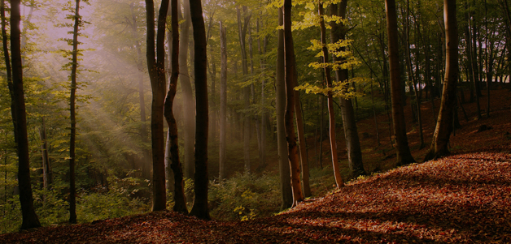

На планете представлено большое количество видов флоры и фауны, которые распространяются и обитают в различных природных зонах. Такое биоразнообразие в различных климатических условиях неодинаково: одни виды приспосабливаются к суровым условиям арктики и тундры, другие учатся выживать в пустынях и полупустынях, третьи любят тепло тропических широт, четвертые населяют леса, а пятые распространяются на широких просторах степи. То состояние видов, которое в данный момент есть на Земле, формировалось в течение 4 млрд. лет. Однако одной из глобальных экологических проблем современности является сокращение биоразнообразия. Если ее не решить, то мы навсегда утратим тот мир, который знаем сейчас.
Темпы исчезновения видов в 50–100 раз превышают естественные и, как предполагают, они будут только резко возрастать. С учетом текущих мировых тенденций исчезновение грозит почти 34 000 видов флоры. Глобальные изменения в атмосфере, такие как разрушение озонового слоя и изменение климата лишь добавляют проблеме остроты. Даже в такой маленькой стране, как Бералусь, эта проблема неоднократно обсуждается в обществе.
Поэтому для предотвращения этой проблемы государство организует различные заповедники и заказники. Можем ли мы на глобальном уровне спасти экосистемы, а вместе с ними не только ценные для нас виды, но также миллионы других видов, которые, возможно, станут для будущих поколения источниками питания и лекарств? Ответ кроется в нашей способности умерить наши аппетиты, приведя их в соответствие с возможностями природы производить то, что нам нужно, и поглощать то, что мы выбрасываем. Если вы не поняли, я имею ввиду рациональное использование природных ресурсов. Не думайте, что вы особенный и являетесь исклучением. Нет. Так думает каждый о себе, забывая про других, поэтому решая любую проблему всегда стоит начинать с себя.
